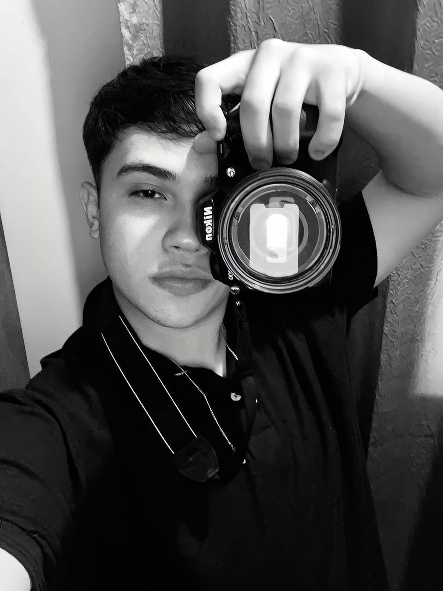
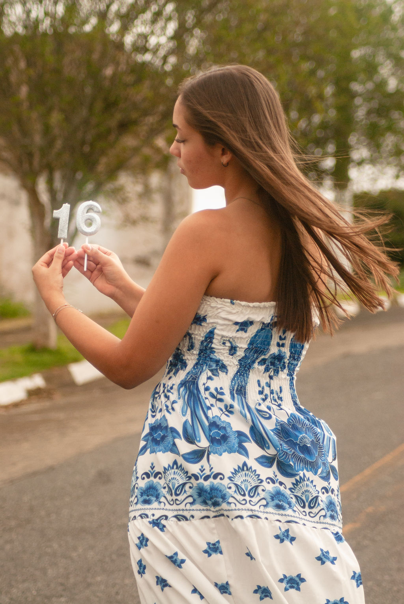
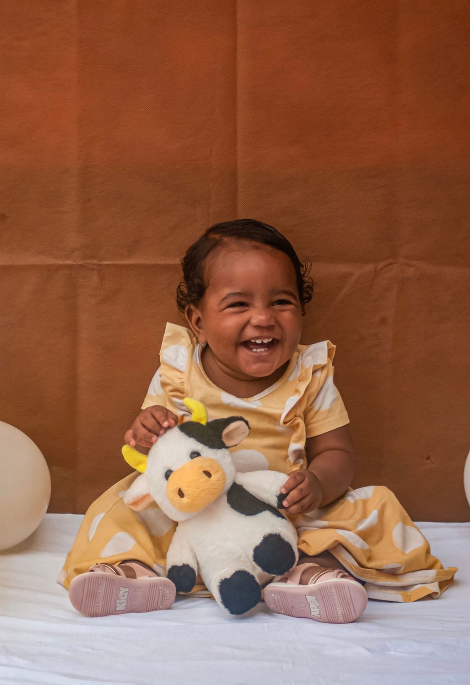

01
01
FOTOGRAFIA & VIDEOMAKER
Histórias
que merecem
ser vistas.
Pessoas, momentos e marcas registrados através de um olhar autoral.

02MANIFESTO
Fotografar é
guardar o que
passa.
Cada imagem carrega um momento que não volta.
Meu trabalho é transformar acontecimentos em memórias visuais que continuam contando histórias mesmo depois que o momento termina.
03HISTÓRIAS
Momentos reais.
Fotografia documental, espontânea e emocional.

02
Aniversários
VER PORTFÓLIO ↗
03
Infância
VER PORTFÓLIO ↗04PROJETOS
Marcas também
têm histórias.
Conteúdo visual para empresas, negócios e projetos que querem ser lembrados.
05PORTFÓLIO
ACOMPANHE O TRABALHO
INSTAGRAM ↗
@matheusaugusto_fvm
VAMOS CRIAR ALGO?
Sua história
Sua história
merece ser
vista.
Para ensaios, eventos, casamentos ou projetos comerciais.